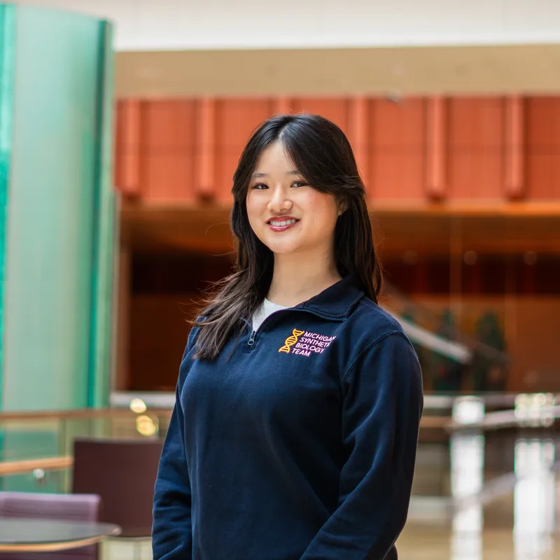
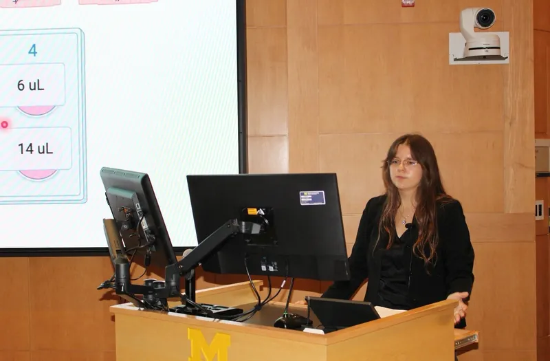

A note from the founder
“I founded this club because of my passion for promoting cardiovascular health in the community and beyond. Through education, service, action, and outreach, my vision when I started this club was to bring together like-minded undergraduate students passionate about cardiology and medicine who all share a common goal of striving to make a lasting impact on cardiovascular health and wellness in the Ann Arbor community and beyond. Cardiovascular disease is the number one cause of death and so many across the country and world are directly impacted by CVD, whether that be themselves or an immediate family member. My goal when founding this organization was to address this epidemic in my own community through community engagement, outreach, and educational initiatives, all led by undergraduate students at the University of Michigan who share a common passion for the same things as I do. As someone who deeply understands the profound impact cardiovascular disease can have on a patient’s life and on those surrounding them, I remain committed to my mission of spreading awareness of the importance of cardiovascular health, wellness, and prevention. I hope that you join us and support us in this important work that we are doing.” — Eryn Stern
Executive Board
Andrew Mulhem
Biology • Senior
I joined Cardio Collective to explore my interest in cardiology beyond the classroom and gain a better understanding of the field through hands-on experiences and exposure to healthcare professionals. I also wanted to be part of a community of students who share an interest in medicine and a drive to learn.
Aaradhya Shrivastava
MCDB • Sophomore
I wanted to help raise awareness for heart healthy lifestyles.

Anna Liao
Biophysics • Sophomore
Cardio Collective made navigating the pre-health maze a lot easier and I loved the people I met!
Alyssa Goretzka
Junior
I aspire to enter the realm of healthcare, and this club has given me so many opportunities to learn more about cardiovascular health in order to help me grow in my future career.
Ainsley Brunette
Biology • Freshman
I knew coming into college I wanted to find cardiology clubs. At Festifall, I immediately found the Cardio Collective and everyone was so welcoming. The club has so many great opportunities to get involved and get insights to the medical world.
Ananya Sharma
Biology • Freshman
I joined Cardio Collective because I aspire to be a cardiologist and wanted to explore cardiovascular medicine beyond the classroom. I also wanted to connect with peers who share similar interests in medicine and get involved with health-related opportunities across campus!

Vanessa Rodgers
Molecular, Cellular, and Developmental Biology • Junior
I am very interested in cardiology and eager to build community with peers who share the same interest. Much of my focus is tied to academic research, so I’m looking forward to engaging with the subject in a more relaxed and social setting.
Zoeya Ahmad
Neuroscience • Freshman
I’m looking forward to getting to know other pre-med and pre-health students!
Krish Mahajan
Biology, Health, and Society (BHS) • Sophomore
I joined Cardio Collective, so I would have the opportunity to collaborate with the undergraduate students on campus to make an impact in the community. I wanted to work with others to spread health equity within the Ann Arbor community.
Julianna Heung
Neuroscience • Sophomore
I wanted to learn more about heart health while raising awareness of heart disease and creating opportunities for members to learn more about cardiology!
Join The Cardio Collective
Good news—no applications are required! We are proudly an open club. Whether you are pre-med, interested in public health, or just passionate about learning life-saving skills, you are welcome here.